Flauta irlandesa · 2 partes
- Tons
- Ré grave (Low D)
- Material
- jacarandá, roxinho ou muirapiranga
a partir de R$ 1.770
Ver detalhes Perguntar no WhatsAppA flauta de madeira de sistema simples: cabeça cilíndrica, corpo cônico, seis furos e nenhuma chave. Faço em Ré grave (Low D), em 2 partes, em que a espiga do encaixe ajusta a afinação, ou em 4 partes, com barrilete e slide de latão. Os encaixes levam cortiça portuguesa. Há a versão simples, sem metais, e a completa, com anéis de latão e coroa com stopper móvel. É para quem já toca pífano ou flauta e quer o som grave e encorpado da música irlandesa.
Valores a partir de; o valor exato, com tom, madeira e opcionais, aparece no Monte sua flauta.
a partir de R$ 1.770
Ver detalhes Perguntar no WhatsAppa partir de R$ 2.370
Ver detalhes Perguntar no WhatsAppAntes de Theobald Boehm apresentar, em 1847, a flauta cilíndrica de metal com sistema de chaves que deu origem à flauta transversal moderna, a flauta europeia era de madeira, com cabeça cilíndrica e corpo cônico. Esse modelo de sistema simples, tocado com seis furos e sem chaves, foi adotado pelos músicos da tradição irlandesa e por isso ficou conhecido como flauta irlandesa.
O corpo cônico estreita em direção ao pé, o que dá à flauta o timbre encorpado e a resposta característicos da música tradicional irlandesa. A digitação é semelhante à do pífano.
Encaixes de espiga com cortiça portuguesa. Na versão simples, sem anéis de latão e sem coroa com stopper; com os dois, a flauta fica completa. Faço em jacarandá, roxinho ou muirapiranga.
2 partes (bocal e corpo): a própria espiga do encaixe funciona como ajuste de afinação. 4 partes (bocal, barrilete, corpo e pé): o barrilete leva um slide de afinação em latão, e é essa construção adicional que explica a diferença de valor.

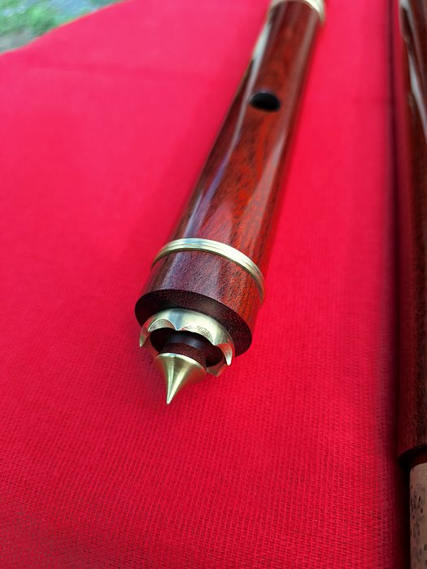
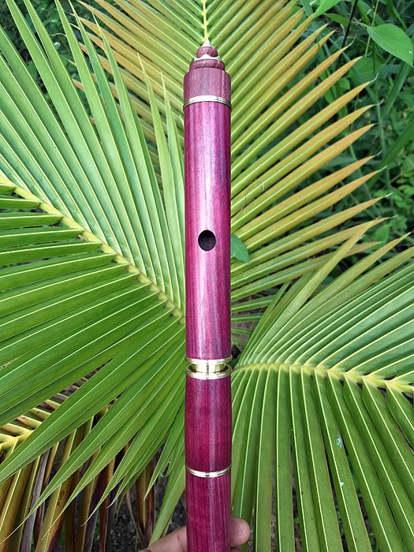


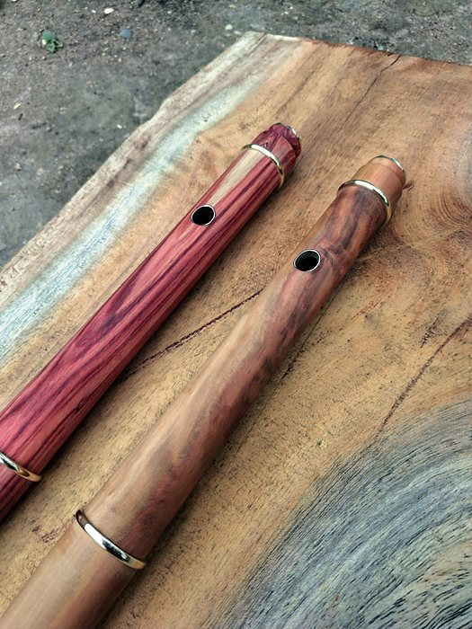
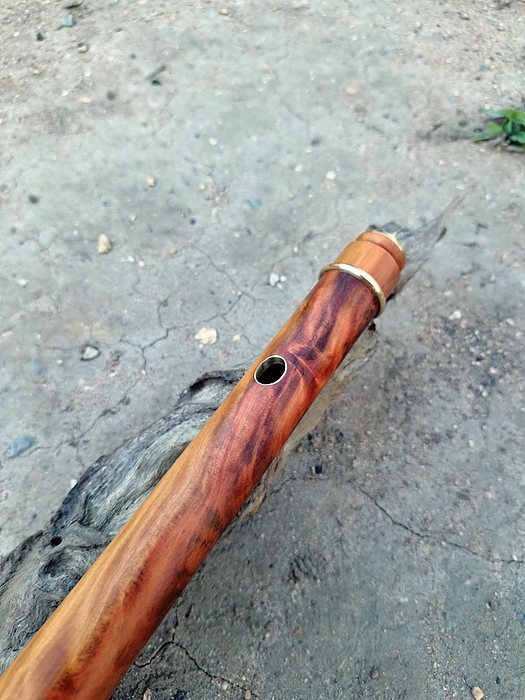
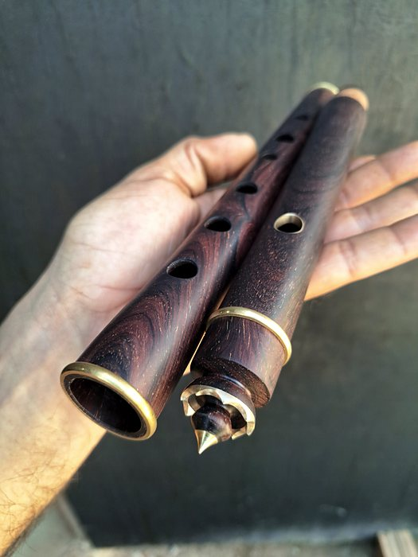


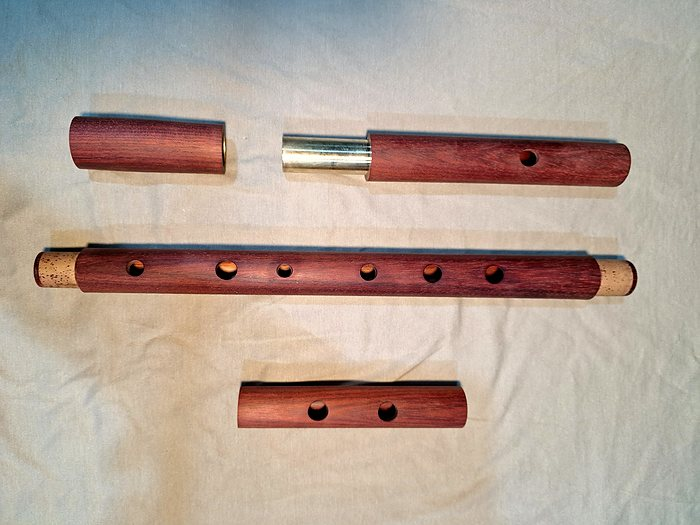
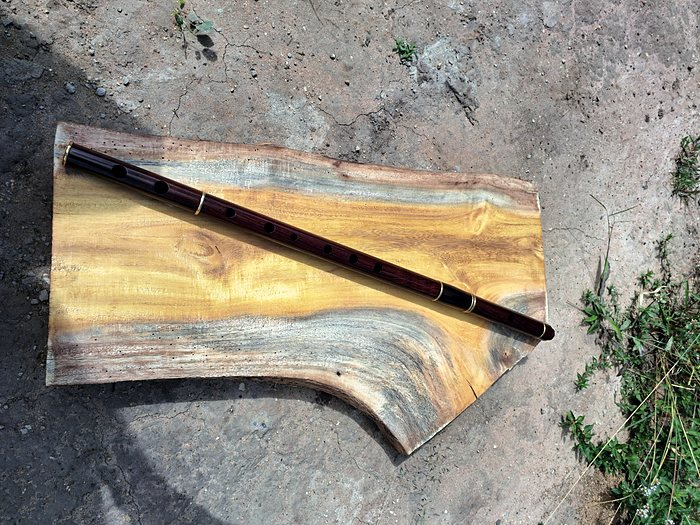
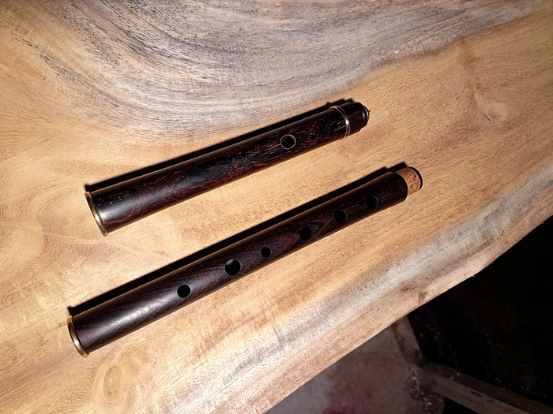
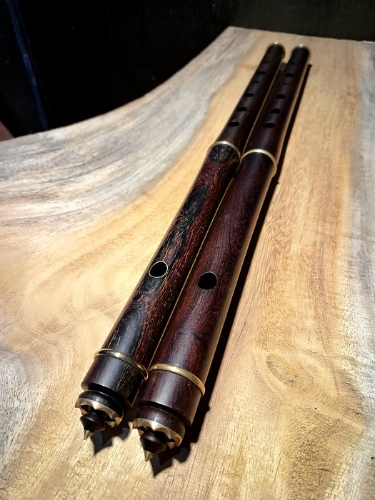
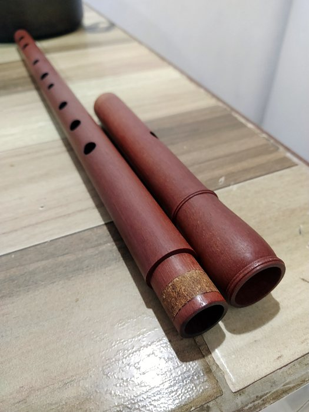
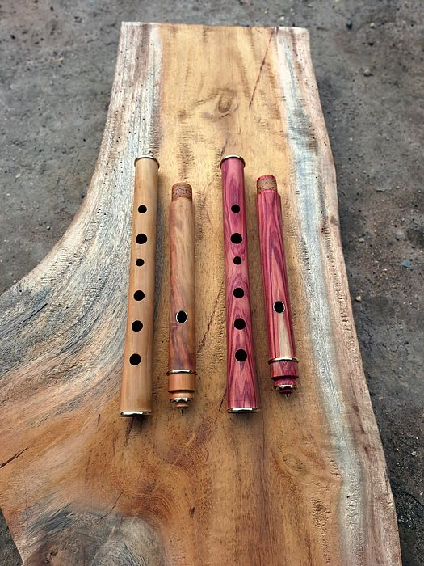

Toque numa foto para ampliar e passar as outras.
Gravação minha com a irlandesa, e um clipe dela de perto.
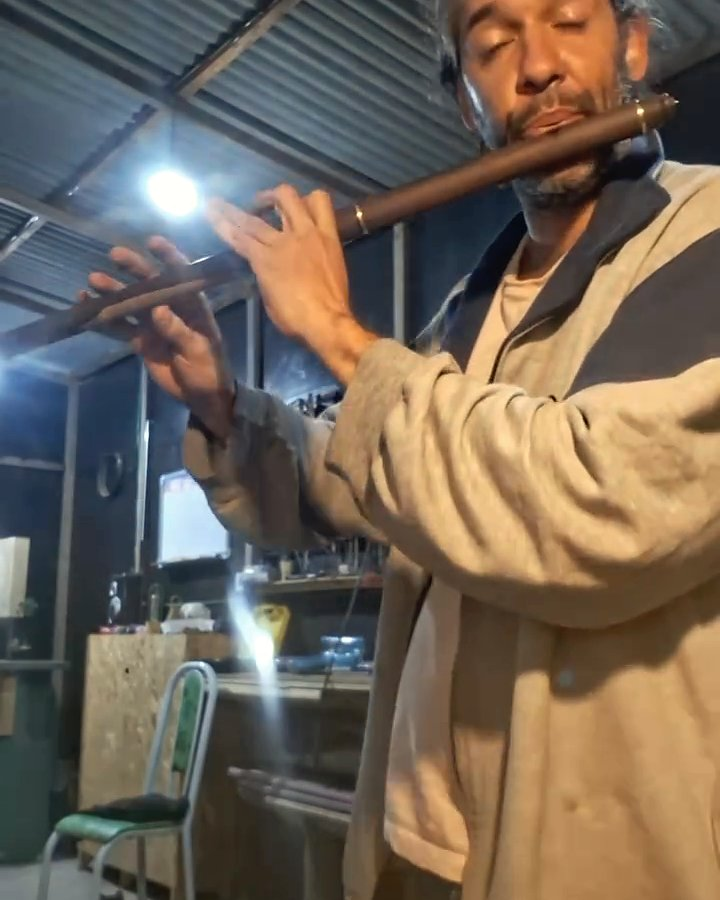
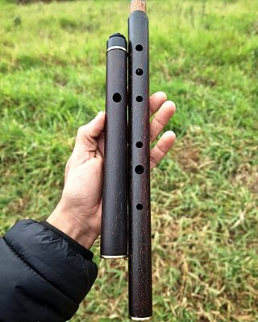
Flauta irlandesaIrlandesa de jacarandá em Ré grave
O valor exato, com os opcionais, aparece no Monte sua flauta.
Frete à parte, calculado pelo CEP.
Por que custa o que custa: o corpo cônico é aberto com alargadores próprios, os encaixes levam cortiça e a afinação é conferida nas três oitavas; a versão em 4 partes soma o barrilete com slide de latão. Veja como uma flauta é feita.